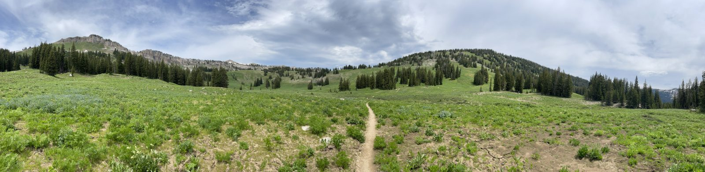
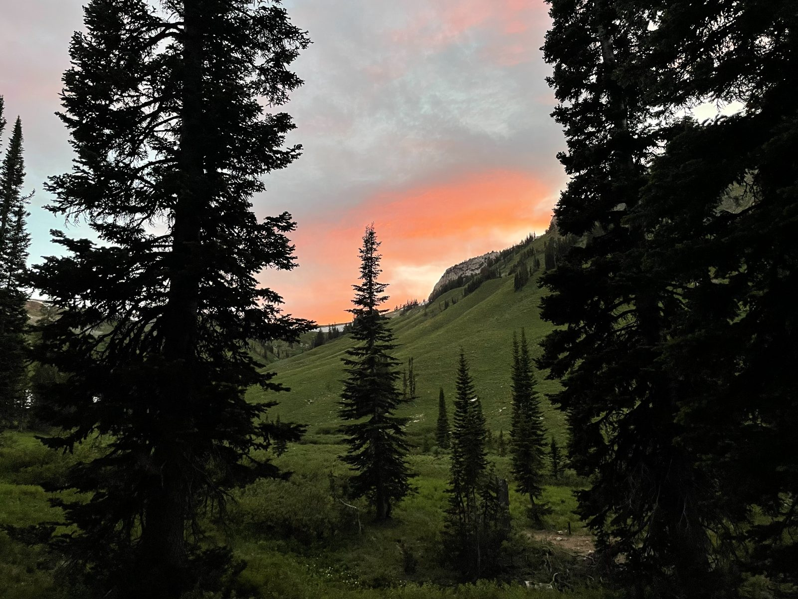
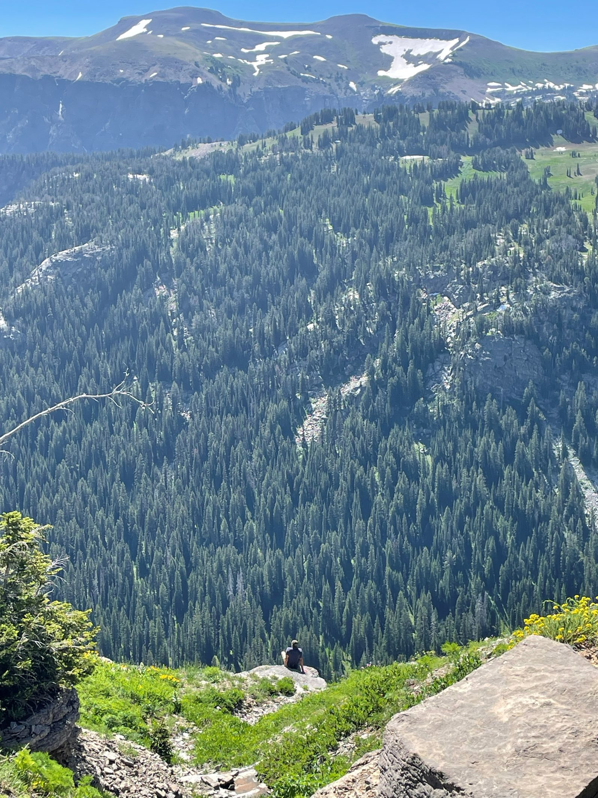
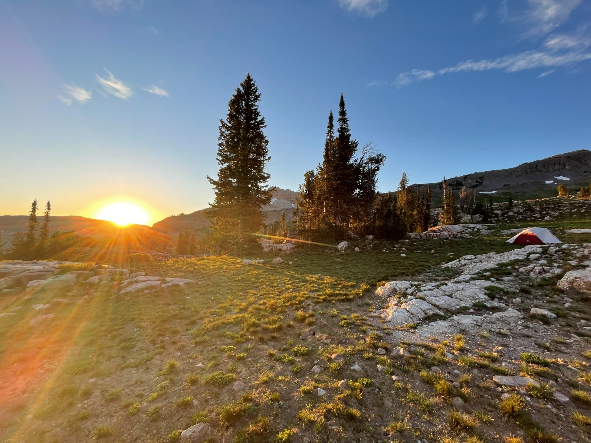
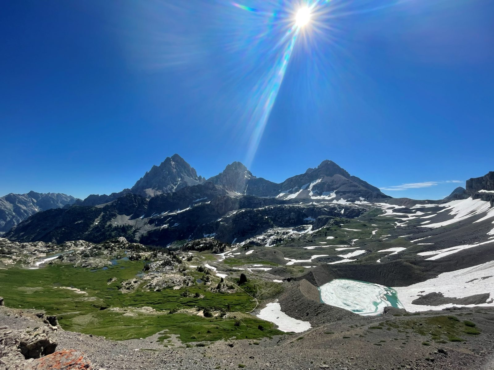
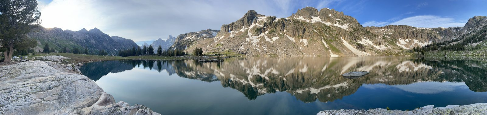
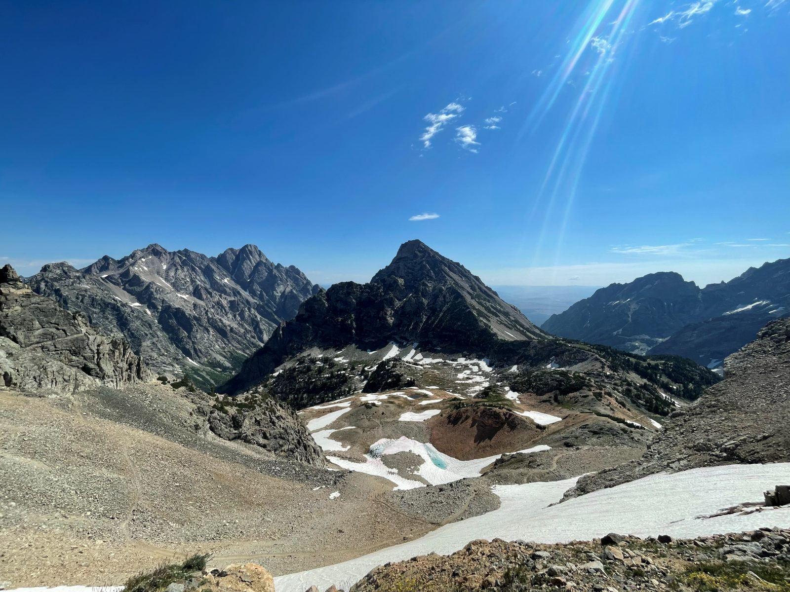

TETONS
DAY 1
- When we were landing the plane bounced off the runway and had to retry the landing cuz it was so windy
- Ate at a really good pizza place in Jackson
- Stayed in a pretty nice hostel called Cache House
- They had a bunch of vinyl on the wall and a record player
DAY 2
- Dad woke up early and got permits for camping
- Ate breakfast at a really weird Mexican cafe thing
- Shopped for Teton merch in Jackson at a few stores and got a couple more things and snacks for camping
- Packed the backpacks for tomorrow for camping
- Hung out until dinner at an Indian place in Jackson called Everest Momo Shack
- Not very good
- Found out from Gus on the trail that it is owned by a guy that went to Nepal and liked the food so he opened a restaurant in Jackson with that food
- Slept at the hostel again
DAY 3
- Drove to Teton Village and took the tram up to the top of the ski resort/waffle place
- Ate really good waffles
- Met up with Andrew and Ally who dad had met in line for permits
- Started hiking the Rendevous Mountain/Teton Crest Trail towards Marion Lake
- lots of annoying ups and downs

- lots of annoying ups and downs
- Got to Marion lake at 2:00 and left a little after 330
- A bighorn sheep walked like less than 30 feet from me and our backpacks
- Filled up waters and ate lunch with the chipmunks
- A bighorn sheep walked like less than 30 feet from me and our backpacks
- Left Andrew and Ally at the fork and went 650ft down over .9 miles into the canyon
- Ate dinner set up camp and filled up waters
- Saw a nice sunset over the mountains

DAY 4
- Woke up at 6 and really got up a little before 6:30 and packed up camp and repacked the bags in about 90 minutes
- Marmot or something chewed up dad's hiking pole
- Got back up to the fork at about 9:00 after an hour of uphill switchbacks
- Stopped and talked to Peggy and Pat at the fork and ate breakfast
- Pat gave me a spoon
- Filled up water at a creek that dropped and turned around under itself

- Got to the Alaska Basin and talked with the Iowa guys a few different times on our hike to Sunset Lake
- Got to Sunset Lake at about 3:00 and set up camp next to Gus
- Washed off in the freezing cold lake and ate a late lunch
- Talked to Gus for a couple hours about different hikes, trips he's done and mountains he's climbed
- Watched the sunset at Sunset Lake

DAY 5
- Slept in til about 7-7:30 but we packed up quick and started Hurricane Pass
- Tough uphill for a couple miles but the view at the top of the three Tetons was amazing

- Met a swiss guy running the trails at Hurricane Pass who went to Northwestern and lived in Chicago when he was younger
- Tough uphill for a couple miles but the view at the top of the three Tetons was amazing
- Descended into and through South Fork Cascade forever
- Finally reached the Cascade Canyon trail fork and talked to a big Philadelphia Eagles fan abt football and baseball and stole some sunscreen
- Started hiking up to North Fork Cascade about a mile and a half uphill to the campsite
- Ran into swiss guy again on his way down from Lake Solitude and talked for a minute again
- Set up camp at about 3:00, filled water, made dinner and hung out around the campsite for a few hours before sleeping
-
1 / 2
-
DAY 6
- Packed up camp by 7 and got going towards Lake Solitude
- Less than one mile of hiking up to Solitude and we ate breakfast at the lake

- Less than one mile of hiking up to Solitude and we ate breakfast at the lake
- Started the ascent to Paintbrush Divide
- Missed the trail head cuz we were distracted by swarms of gnats around us and prolly walked almost an extra mile between going the wrong way and finding the way back
- Saw a deer while we were lost
- Talked to a guy repairing the trail who said they get their camp helicoptered in and work for 8 days on the trail
- Got to the top and talked to a couple people at Paintbrush Divide

- Hiked downhill thru lots of snowy spots
- My fingers were freezing from grabbing the wall of snow for a minute or two at a time
- Upper and lower paintbrush were kinda boring except for the view of the whole valley and Leigh Lake
- Met a lady with an awesome looking dog
-
1 / 2
-
- Met a lady with an awesome looking dog
- The last 7 miles or so of the hike were through thick greenery and no scenic views
- Saw a snake slither across the path
- Finally got out at the trailhead and walked 3-4 miles looking for a ride
- Lady at a lodge told us the shuttle could pick us up but then the shuttle driver said the shuttle service was ending and they weren't going that way again today
- Ended up calling an airport taxi and they came out at got us at Jenny Lake after about 2 hours of trying to find a ride back to Jackson
- Showered and went out and talked with Andrew and Ally until the restaurant closed at 10:30
DAY 7
- Woke up
- Ate Wendy's
- Got on the plane to go home